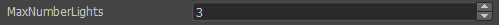
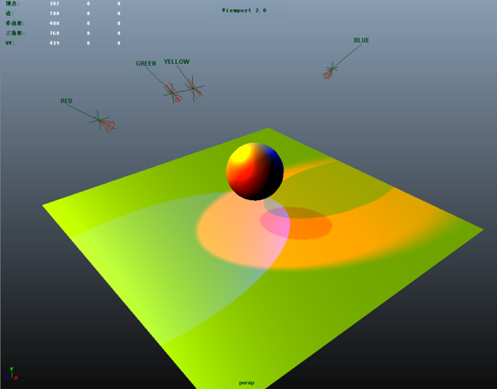
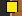
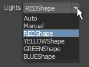
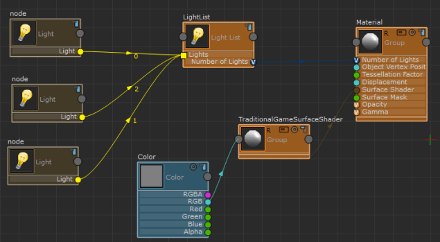
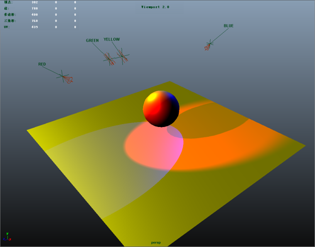

默认情况下，“ShaderFX”着色器绑定到三个灯光。
在 ShaderFX 编辑器中选择 Material 节点。在 Maya“属性编辑器”(Attribute Editor)中，您可以通过“MaxNumberLights”属性调整着色器绑定到的灯光的数量。

在该场景中，有四个颜色不同的灯光。如果将“MaxNumberLights”设置为 4，则这四个灯光都会对着色器有影响。
注： 为着色器指定大量灯光可能会降低着色器的性能，因此您可能需要设置一个合理的数量。

您也可以选择将您的灯光子集组灯光绑定到 ShaderFX 着色器，以便只有这些灯光会影响着色器。
将灯光子集绑定到 ShaderFX 着色器
- 选择 Hw Shader Nodes > Lighting > Light List 创建 Light List 节点。
注： Lights 属性旁边的方形图标  表示它可以接受多个输入。
- 选择 Hw Shader Nodes > Lighting > Light 创建 Light 节点。针对要绑定的灯光数量重复此步骤。
- 选择 Light 节点。在 Maya“属性编辑器”(Attribute Editor)中，从 Light 下拉列表中选择要绑定的灯光。

- 针对每个 Light 节点重复步骤 3。
- 将每个 Light 节点连接至 Light List 节点的 Lights 属性。
- 将 Light List 节点的 Number of Lights 属性连接到 Material 节点的 Number of Lights 属性。

在本示例的场景中，四个灯光中只有三个绑定到了着色器：红色、黄色和蓝色。如果将其与上图相比，会发现绿色灯光不再对着色器有影响。
